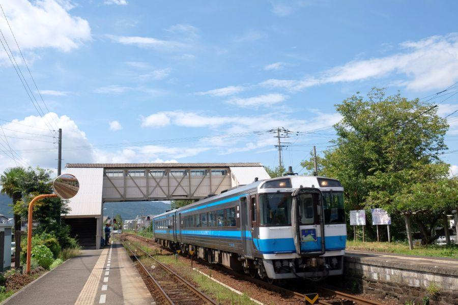

小山を通過するために設けられた煉瓦巻トンネル < 赤石トンネル / 徳島県小松島市 >
全国唯一の鉄道非電化県であり、歴史的鉄道建造物の宝庫・徳島県。こちらで見ることできる精緻(せいち)に積まれたイギリス積みの煉瓦アーチトンネルは、当路線が開通した大正5年(1916)に建造されたものです。
阿波赤石駅
阿波赤石駅(あわあかいしえき/徳島県小松島市)
現駅舎は平成27年(2015)の完成。駅舎は1面1線・写真の待合所がある簡素な造りですが、バリアフリー構造が特徴。
駅自体の歴史は古く、大正5年(1916)12月に阿南鉄道の赤石駅として開業。後に国有化されて牟岐線・阿波赤石駅(現駅名)になった。
大正5年(1916)、世界は第一次世界大戦真っ只中。
国内では「坊つちやん」等を書いた小説家・英文学者である夏目漱石が、同年同月没している。
駅位置は徳島から阿南のほぼ中間。
駅名に青の網掛けが施されている駅は特急停車駅。と言っても、平成31年(2019)のダイヤ改正で「Homeエクスプレス阿南」が廃止されたため、運転されている特急列車は「特急むろと」の朝夕一往復のみ。阿波赤石駅は特急停車駅ではないものの、当駅を通過する姿を見ることができるのは、
上り : 7:57～8:05の間
下り : 19:45～19:52の間
一日二回のレア列車になっています。
パターンダイヤの導入
現在の運転ダイヤ
上下とも、10時から18時・19時まではおおむね同時刻の発車。
「パターンダイヤ」
毎時同じ時刻に発車することで、利用客に分かり易さを通じて親しみを持ってもらうための、サービスの一種。
四国内では「ことでん」こと高松琴平電気鉄道が、朝ラッシュ以降～夕方ラッシュが終わるまで、「00・15・30・45」のように、毎時同じ時刻に列車が発車するダイヤで運行されています。
牟岐線では、阿南駅以南で乗客数が大きく減少します。同様の悩みは徳島バスの大阪～阿南・橘線でも同様。
そこで、日中に阿南駅から先を大阪駅から運行されている高速バスにリレーすることで、阿南以南の交通機関を確保する試みが、平成31年(2019)のダイヤ改正で始まりました。
それに伴って同時に開始されたのが徳島～阿南間の日中パターンダイヤ。まだ導入初年度なので評判や成績を耳にすることがありませんが、どうなのでしょうか。地方の公共交通機関を維持するのは、本当に大変な局面を迎えています。
プラットHome
奥が阿南方面。かつては二面二線存在したプラットHomeは、現在は一面一線。1～4両の各駅停車が発着するのみです。
PC枕木(prestressed concreteの略)に、カーブ外側のレールがやや高く設置されたカントが導入されています。
これによって阿波赤石駅を通過する列車が、スピードをあまり落とすことなく通過できる構造になっていますが、前述の通り牟岐線で駅を通過する速達列車は上下1本ずつしか運転されていません。せっかく施された高速化の技術を持て余していると言えます。
徳島方面。きれいに並べられたPC枕木と、トンネル方面に向かってやや下り勾配になっていることがわかります。
駅を離れて、トンネルへ近づいてみることにします。
赤石トンネル
阿波赤石駅東方にあるトンネルの名前は「赤石トンネル」
イギリス積み煉瓦の擁壁(ようへき)に四層巻きの美しいアーチ。飾り気はないけれど、丁寧に造り込みが行われた代物であることは、建造から100年を超えて現役稼働中であることから見て取れます。
山はトンネル
川は鉄橋
簡単な丸木橋のようなものから、長大な青函トンネルまで。古来から現代まで人類は様々なトンネルや橋によって自然条件をクリアしてきましたが、トンネルの方が歴史が浅い。
大きな川に沿った路線で、鉄橋を通じて川の右岸・左岸を行ったり来たりすることがありますが、その理由の一つは山を避けるため。新たに鉄橋を架ける建造費を捻出してでも、山、すなわち技術的に未知数であるトンネルの建造を避けたかった事情が、鉄道黎明期にはありました。
明治維新後の交通整備で、東京から大阪・神戸へ向かう鉄道ルートを選定する際、軍事上の理由もあり一旦は東海道ルートより中山道ルートでの建設が決定したが、その後撤回され旧東海道ルートでの建設されている。旧中山道・甲州街道ルートは、中央アルプス・南アルプスと言った標高が高い山々が行く手を阻む。長大トンネルを掘ってそれらを通過することができるような技術は当時無く、山々を避けるように線路を敷設していては距離増に繋がる。高低差が大きければ、当時の非力な車両にとっては運行に支障をきたす。
内陸ルートは開通前・開通後共に、多数のデメリットが生じることが予想されたため、いち早く東京～大阪・神戸を結ぶ路線としては旧東海道ルート(現東海道本線)が優先された。
徳島県における鉄道網整備は、そのような幹線の性格を持たされたものではなかったが、様々な理由からトンネルを建造して鉄道を敷設することが避けられた事情は同様。そういう点では、短いトンネルと言えど建造されたことは特例であり、鋭意作と言える。
現在、このトンネルを通過するのは一日一往復の特急列車と、一時間に二往復程度運転される各駅停車。
昔から頻発に列車が運行される路線ではありませんが、国鉄時代にはそれなりに車両数が組まれた急行や貨物列車が走っていたことでしょう。トンネル上部の煉瓦が黒ずんでいますが、これは蒸気機関車時代の煤煙が付着しているものと思われます。
トンネルの東側
トンネル反対側、徳島寄りの坑門を眺めに来ました。
見て分かる特徴として、外側のレールが高く設置されたカント構造により、列車はそれほどスピードを落とすことなくトンネルに進入することができます。
しかしながら、赤石トンネルを抜けるとすぐに阿波赤石駅。夕方やってくる下り特急列車以外は駅に停車する必要があるため、ほぼ全ての列車がこの地点でスピードを落とさなければいけません。
カント構造はスピードアップだけではなく、遠心力を軽減して乗り心地を向上させる効果もありますが、その構造を持て余している贅沢な地上設備と言えます。
山と言ってもこれだけの大きさ・標高なので、山を「コ」の字を縦にした形に切り崩す、切通構造でこの部分をクリアすることができたようにも思います。時代的に環境問題はあまり考えられませんが、何らかの事情があったことでしょう。
近くに掲げたあった阿波赤石駅の周辺案内図
商店等が情報の中心になるものが駅前にある案内図ですが、そこにもしっかりトンネルの存在が記されていました。
阿波赤石駅
< 自家用車 >
高松駅から 約1時間40分、85km
徳島阿波おどり空港から 約45分、27km
< 公共交通機関 >
JR牟岐線・阿波赤石駅下車
※ 主な地点からの最速・最短距離
関連記事

2018,8/28 列車を下りたら、徒歩0分で海水浴。夏だけの臨時駅 < 田井ノ浜駅 / 徳島県美波町 >
2018,11/14 終戦間際に発生した列車空襲事件 < 那賀川橋りょう / 徳島県阿南市 >

2019,6/30 日本最古のコンクリート製トンネル < 松坂隧道 / 徳島県牟岐町 >

2019,7/6 江戸を東京と改めた男の最期の地 < 江藤新平遭厄記念碑 / 高知県東洋町 >

2019,7/12 土佐の長宗我部元親、他國侵攻の契機となった事件 < 島弥九郎事件 / 徳島県海陽町 >

2019,7/18 前身は徳川時代？山中の古トンネル < 猪ノ垰隧道 / 徳島県海陽町 >

2019,8/11 明治時代の跨線橋と使用されていない長大プラットHomeの秘密< 蔵本駅 / 徳島市 >

2019,8/23 徳島県末端の高規格鉄道駅 < 海部駅 / 徳島県海陽町 >

2019,8/29 全長僅か8.5km。ミニ鉄道の終着駅 < 甲浦駅 / 高知県東洋町 >

2019,9/4 古き良き佇まいを見ることができる、徳島近郊のローカル駅・前編 < 石井駅/徳島県石井町>
